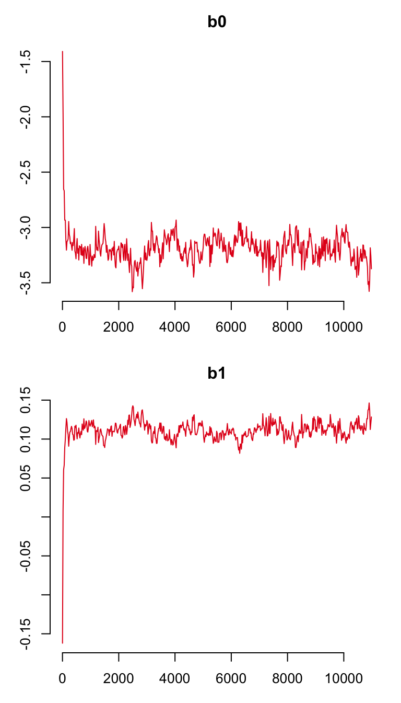

Introduction
In the previous section you learned how to format the data ready for analysis using basta. In this section we’ll run through how to fit a simple Gompertz model - the default for BaSTA. This model will not have any covariates - we are simply going to estimate the coefficients of the fitted Gompertz model.
Fitting a Gompertz model
For this section, let’s load the full dataset without errors… Read in the file fixedData.csv, which we will simply call dat…
dat <- read.csv("data/fixedData.csv", header = TRUE)Now you have created a BaSTA-ready data set its time to fit a simple model. In fact, if you successfully finished the last session, you will already have fitted a BaSTA model.
To recap, this is how to do it…
gsnc <- basta(dat, studyStart = 1970, studyEnd = 2000)
#> No problems were detected with the data.
#>
#> Starting simulation to find jump sd's... done.
#>
#> Simulation started...
#>
#> Total MCMC computing time: 4.22 mins.where, for simplicity we have named the BaSTA output object as gsnc which stands for Gompertz, simple, no covariates.
You will notice that there are only three arguments to this function: the BaSTA data object, and the start and end years of the study. There are of course other arguments to the basta() function (see ?basta). The most important ones concern the model structure. The default model, which the above code fits, is a standard Gompertz model with a simple shape. We will discuss the other options in a later section.
Visualising the BaSTA outputs
With BaSTA you can extract the outputs from the BaSTA objects in different ways. You can simply type the name of the object and the built-in function print() will recognise the object and produce the following output
gsnc
#>
#> Call:
#> Model : GO
#> Shape : simple
#> Covars. structure : fused
#> Minimum age : 0
#> Cat. covars. :
#> Cont. covars. :
#>
#> Coefficients:
#> Estimate StdErr Lower95%CI Upper95%CI SerAutocor UpdateRate
#> b0 -3.2070 0.100782 -3.39559 -3.0119 0.6121 0.2536
#> b1 0.1133 0.009139 0.09456 0.1311 0.6482 0.2574
#> pi.1970 0.5015 0.007901 0.48538 0.5164 0.1412 1.0000
#>
#> Convergence calculations require more than one run.
#> To estimate potential scale reduction run at least two simulations.To get more information, simply use function summary() like this:
summary(gsnc)
#>
#> Output from BaSTA version 1.9.3
#>
#> Call:
#> Model : GO
#> Shape : simple
#> Covars. structure : fused
#> Minimum age : 0
#> Cat. covars. :
#> Cont. covars. :
#>
#> Model settings:
#> niter burnin thinning nsim
#> 11000 1001 20 1
#>
#> Jumps and priors:
#> Jump.sds Prior.means Prior.sds
#> b0 0.18564 -3.00 1
#> b1 0.01496 0.01 1
#>
#> Mean Kullback-Leibler
#> discrepancy calibration (KLDC):
#> KLDC was not calculated due to insufficient number of simulations to estimate convergence.
#>
#> Coefficients:
#> Estimate StdErr Lower95%CI Upper95%CI SerAutocor UpdateRate
#> b0 -3.2070 0.100782 -3.39559 -3.0119 0.6121 0.2536
#> b1 0.1133 0.009139 0.09456 0.1311 0.6482 0.2574
#> pi.1970 0.5015 0.007901 0.48538 0.5164 0.1412 1.0000
#>
#> Convergence:
#>
#> Convergence calculations require more than one run.
#> To estimate potential scale reduction run at least two simulations.
#>
#> DIC:
#> DIC was not calculated due to insufficient number of simulations to estimate convergence.In addition, the BaSTA object is recognised by function plot(), allowing you to plot different aspects of the outputs. For instance, to visually determine if the MCMC parameter chains or “traces” have converged, simply type:
plot(gsnc)which produces the trace plots for the mortality parameters. To make sure that the recapture probability has converged, use argument trace.name = "pi" as
plot(gsnc, trace.name = "pi")
To plot the mortality and survival trajectories, use argument plot.traces = FALSE, which produces the following plot:
plot(gsnc, plot.traces = FALSE)
Finally, you can produce what we call a “fancy plot” that combines the densities of the mortality parameters and the trajectories of mortality and survival into the same plot as
plot(gsnc, fancy = TRUE)